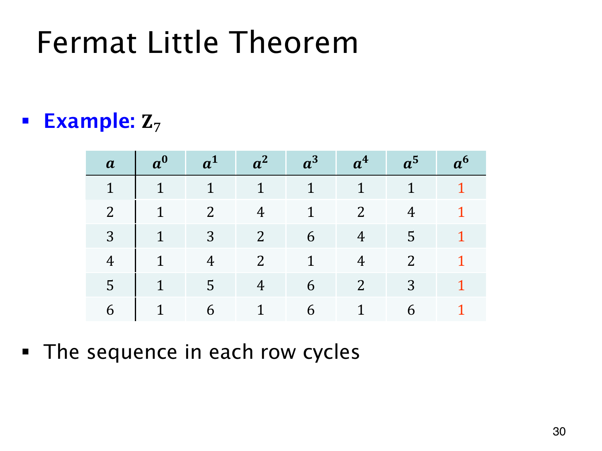

L1.14 · 第 30 页讲解原文
查看这一页课件

模 7 的幂怎样循环
表格的每一行固定一个底数 a，从左到右列出 a0 到 a6 的模 7 余数。最后一列全为 1，正好符合费马小定理
a6≡1(mod7),a=1,…,6.
不过，回到 1 所需的最少步数各有不同。
| 底数 a | 余数的循环 | 最短周期 |
|---|---|---|
| 1 | 1,1,1,… | 1 |
| 2 | 1,2,4,1,2,4,… | 3 |
| 3 | 1,3,2,6,4,5,1,… | 6 |
| 4 | 1,4,2,1,4,2,… | 3 |
| 5 | 1,5,4,6,2,3,1,… | 6 |
| 6 | 1,6,1,6,… | 2 |
费马小定理保证 p−1 可以作为周期使用，并没有保证它是最短周期。模 7 的这些行中，最短周期分别为 1,2,3,6，都整除 6。
计算 2100mod7 时，已知底数 2 的周期为 3，便可用
100≡1(mod3)⟹2100≡2(mod7).
只用费马小定理也能算：100≡4(mod6)，所以 2100≡24=16≡2(mod7)。
这张表展示了模 7 的具体结果，一般情形仍需要定理的证明。各行循环长度的差异也关系到离散对数和密钥交换的底数选择：非零底数产生的幂，未必能遍历所有非零余数。